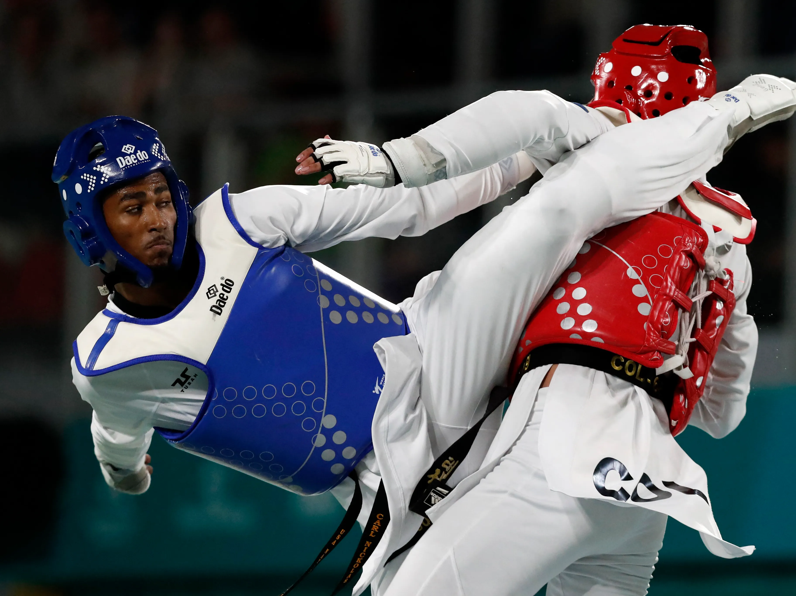
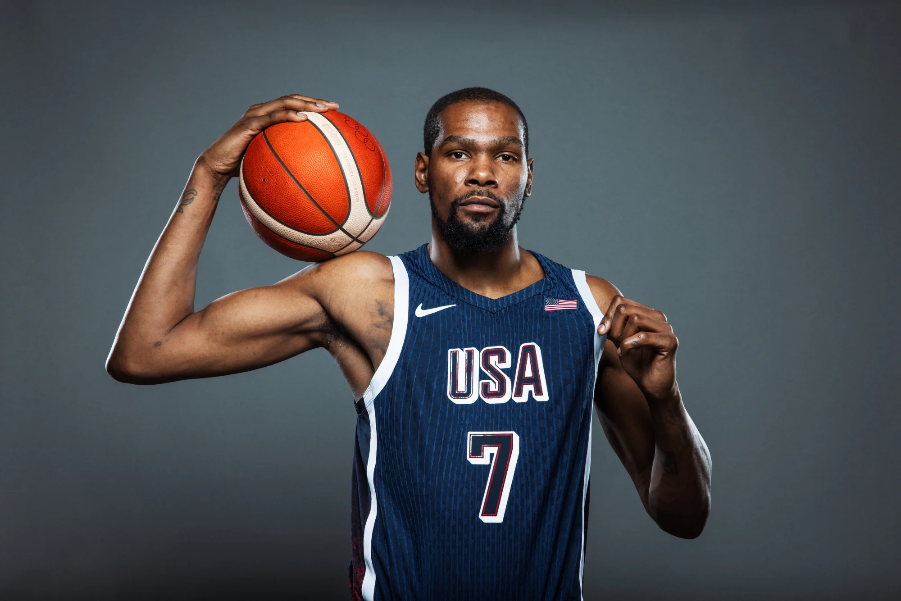

MY BLOG
Welcome to the blog of Justine Bacasen
Justine Bacasen
Information Life story
Justine is a 16-year-old boy with a natural talent for sports and a passion for staying active. He excels in a variety of athletic activities, from running and swimming to playing basketball and soccer. His energy seems endless, and he’s always the first one to volunteer for a game or a challenge, whether at school or during his free time. Justine spends hours practicing his skills, constantly pushing himself to improve. His dedication to fitness is evident in his disciplined routine, which includes daily workouts and outdoor training sessions. Despite his competitive spirit, Justine is a team player who encourages and supports his teammates, always striving to help them perform their best. His athleticism is not just about physical strength but also about mental toughness, as he is focused, determined, and always ready to take on the next challenge.
Background story
Life Past
Justine had always been known for his athleticism. From a young age, he was the star of every game, running faster, jumping higher, and scoring more goals than anyone else. Sports were his escape, his passion, and the one place where he truly felt at home. But everything changed one fateful afternoon during a soccer match. Justine was sprinting toward the goal when he felt a sharp pain in his knee, followed by a sickening crunch. He collapsed to the ground, clutching his leg, unable to move. His teammates rushed over, but Justine could see the fear in their eyes. His dream of becoming a professional athlete suddenly seemed so far away. At the hospital, the doctors confirmed Justine's worst fear—a torn ligament that would require surgery and months of rehabilitation. The news shattered him. The idea of sitting on the sidelines, unable to play, felt like a cruel punishment. For weeks, he struggled with the pain of both his injury and the feeling of being left out. He watched from the bleachers as his teammates continued to improve, while he felt his body and confidence deteriorating. Even though his friends and family tried to lift his spirits, the loneliness of not being able to do what he loved began to weigh heavily on him. As the months went by, Justine’s recovery was slow. He lost his place on the team, and the sports he once dominated now seemed like distant memories. He realized that he wasn’t just grieving for the loss of his athleticism, but for the part of himself that felt incomplete without it. Though he still had dreams of returning to the field, the injury had changed him in ways he hadn’t anticipated. It wasn’t just about the physical pain anymore—it was about the silence of no longer hearing his name shouted in victory or feeling the rush of adrenaline as he scored a goal. Justine now found himself asking if he could ever be the same again, and whether his dreams of being an athlete would ever come true.
Justine Bacasen
Galatians 6:9 (NIV): "Let us not become weary in doing good, for at the proper time we will reap a harvest if we do not give up." This verse reminds us that even when it feels tough, doing good and persevering will bring rewards in due time. Both of these verses highlight the importance of faith, endurance, and trust in God's strength to help us through life's challenges.
Sports
-

Taekwondo
1st Sport -

basketball
2nd Sport

Tags
Hope BTCG Teacher Analiza Wangal Daleth DIY Friends Family Family Athletics Brands Shopping Sports Games